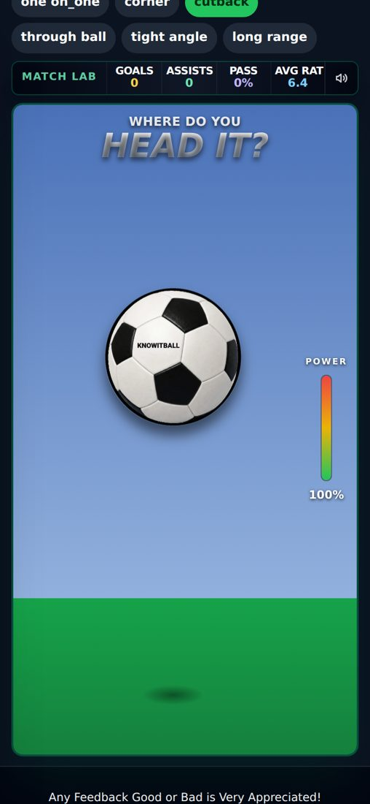
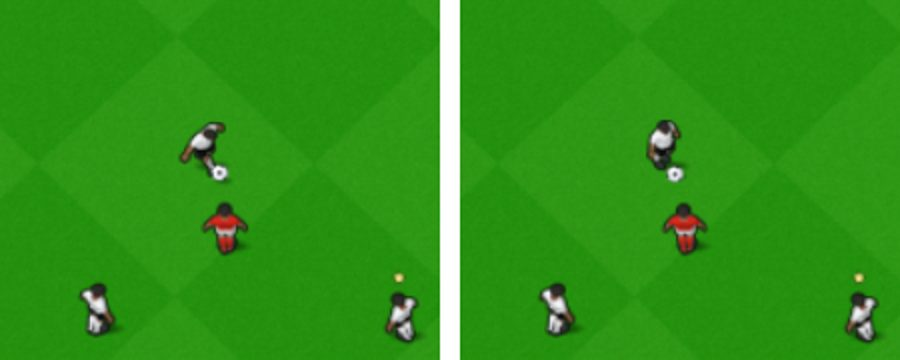
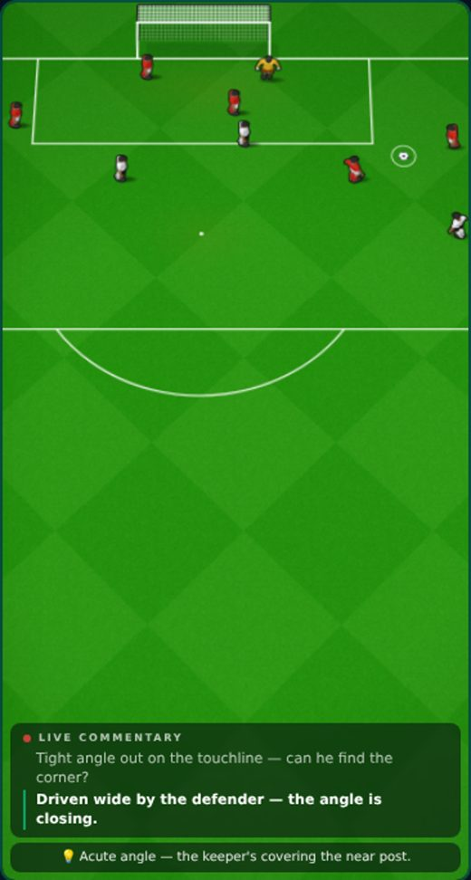
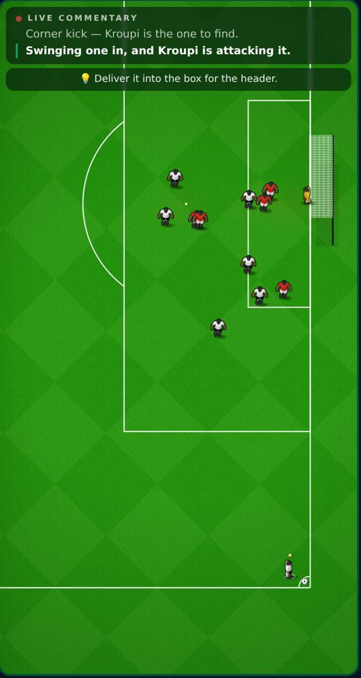

13 October 2026 · branch Mikey, merged to main (live) · 7 commits since v0.15 · from Mikey's gameplay review video · tests for these changes: all pass
13 → 6goal videos in a match's feed
19%bigger players with the new framing (test switch)
1 in 10close chances arrive as a header (test switch)
2.0 mnet depth in the side view (was 1.2 m)
Check these
A passing chance: the ball ends at your team-mate's feet when PASS shows
After a match: the feed's videos only play when you press ▶, and there are at most 2
An achievement earned off the pitch (shop, Life tab): the pop-up appears at once, with the star bar filling
Corners (side view): the net has real depth; the goal posts stand straight in every view
Settings → Developer tools → "New framing (test)" — off by default
Settings → Developer tools → "Headers & volleys (test)" — off by default
Added (test switches, off by default)
New chance framing
Problem: the camera left the bottom of the pitch empty and pulled out to fit wide players. Fix: it zooms in, keeps the whole goal on screen (hard rule) with a little space behind it, and keeps the ball at least a quarter of the screen in from the edges. A wide chance near the box turns side-on. Players come out 19% bigger. Measured over 840 chances: goal always fully on screen; 6 turned side-on. measured
Where to try it
Settings → Developer tools → "New framing (test)", or /star-bigger-dev?framing=new. Not yet watched in a full career match.
Headers and volleys off a ball in the air
Problem: the ball bobbled on the strike screen for no reason. Fix: about 1 close chance in 10 arrives in the air ("Head it?") and 1 in 8 bouncing ("Volley it?"). The ball shows off the ground with its shadow on the grass, and the shot starts from that height (1.85 m for a header, up to 0.95 m for a volley). The random bobble is gone. Scoring is unchanged: the same shot scores 82/300 off the grass, 81 as a header, 82 as a volley. seen

The header strike screen: ball high, shadow below.
Where to try it
Settings → Developer tools → "Headers & volleys (test)", or /star-bigger-dev?airborne=new. Corners, free kicks and penalties never change. On the pitch before you kick, the ball still sits on the grass.
Fixed
A completed pass ends at your team-mate's feet added 16 Oct
Before: in passing chances the ball froze where it first came within 2.0 m of him, a median 1.9 m short (400 passes measured). Now it rolls the rest of the way in a third of a second while PASS shows. Which passes reach him is unchanged. seen

Left: as PASS shows. Right: half a second later, at his feet.
Achievements earned away from a match unlock at once
Before: they only unlocked after the next match, and the pop-up was never drawn in the New UI. Now: the pop-up appears straight away, with the star rating bar filling. measured
Achievements can level you up on the spot
Their star points lift the one-level-a-match limit at once. Match and status points still wait for the next match. measured
Goal posts stand straight
Before: on the tipped-back pitch the far post leaned out. Now both posts are upright. The side-view net is a real goal's 2.0 m deep (was 1.2 m, a thin strip). measured
Changed
Fewer feed videos, and they wait for you
At most 2 video posts a match (the highlights and your goals). Goal videos in a test match: 13 → 6. A video plays only when you press ▶. The highlights sit at a random spot in the first screenful instead of always on top. measured
Known issues
Side view draws players differentlyLOW
Normal view: small men drawn at the 20° angle. Side view (corners): men drawn straight from above, bigger. Waiting on a decision about which look to use. seen

Normal view

Side view (corner)
Chance builder: team-mates in front, no defendersLOW
From the review video. Not fixed yet.
A corner that looked glitched (review video, 11:02)LOW
Not reproduced yet.
Next
Decide whether the new framing and headers/volleys become the game (then the switches go)
One look for players in both views
Previous versions
v0.15 · 2026-10-13 · International football: call-ups, duty mode, watching on TV, scorers for every goal; the Ballon d'Or counts club and country (Star Man out); casino scandals; name banks for 211 nations
v0.14 · 2026-10-09 · Real Premier League shots playable as test chances; Chances (testing): about 9 Kane-style highlights a match, Old still the default
v0.13 · 2026-10-08 · Play-off, cup and European round-ups with animated brackets; the real UEFA knockout; two-legged League Cup semis; ±25% wage when your club goes down or up; relegation day
v0.12 · 2026-10-08 · The ovation's hugs, dap-ups, pat and claps made in Blender; the farewell's 3D ovation checked in a real match
v0.11 · 2026-10-08 · 3D standing ovation; centre-back Golden Boot and day-one line-ups fixed; more assists; clearances, negotiations and Relations reworked
v0.10 · 2026-10-04 · Relationships rebuilt: bars that move slowly, one game per relationship, happiness decides recovery, no Sponsors bar; injuries switched off
v0.9 · 2026-10-03 · XP rebuilt (slower start, XP by the minute, no double pay) and the XP Book to edit every amount; 3D garden, North/South 2026/27, Club Data
v0.7 · 2026-09-30 · A new 1-10 star career rating separate from overall, 7 boots, dearer Style, 2 training sessions a week, restyled training, contract terms
v0.6 · 2026-09-27 · Five levels of every boot and lifestyle item, a moving ball on the strike screen, commentary that barely repeats, new chants
v0.5 · 2026-09-26 · How you get picked: win your shirt from a better-rated rival, form over 3 games, subs when the score says, cup rotation
v0.4 · 2026-09-25 · Training rebuilt the New Star Soccer way: 30 fixed levels, three tries, stars raise the skill; pace, vision and free kick matter in matches
v0.3 · 2026-09-25 · What you see on the pitch matches where people stand: nearer players and the ball drawn right, corners from the flag; trophy pictures, instant energy modes, feed likes
v0.2 · 2026-09-22 · Energy master plan: in-match energy modes, a real ticking clock, half-time KIB cans, rest days, tougher fatigue rules
v0.1 · 2026-09-21 · Economy, fame and reputation rebuild: Premier League wages to ★100k, fame levels, one reputation number, 50-season careers